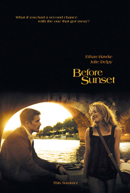

Before Sunset is a 2004 American romantic drama film directed by Richard Linklater, who co-wrote the screenplay with Ethan Hawke and Julie Delpy, from a story by Linklater and Kim Krizan. The sequel to Before Sunrise (1995) and the second installment in the Before trilogy, Before Sunset follows Jesse (Hawke) and Céline (Delpy) as they reunite nine years later in Paris.
Linklater, Krizan,[3] Hawke and Delpy began developing a larger budget sequel after the release of Before Sunrise, but failed to secure funding. After a period of independent work, notably inspired by Hawke's divorce from Uma Thurman, the writers came together in 2003 and incorporated elements of their screenplays, as well as scenes written during development of Before Sunrise, to create the film's screenplay. Principal photography took place entirely in Paris, and the film is considered to take place in real time. Delpy also contributed original music to the film's soundtrack.